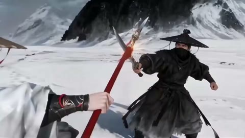

← 案例图谱AI49 / 主要视觉研究样本
Seedance武侠动作尝试，确实不一样。结尾附流程
电池没电ing · 5.7万播放快照 · <10万 · B站原作 ↗
片尾给出了参考图与分时段动作输入。可把它当分镜约束教材：先明确机位和动作任务，再讨论生成工具。

约16.233秒 · 案例代表帧从画面里找依据
这一例先看什么
全身雪原、脸与斗笠、飞刃、腾空、过肩和回开头构图形成短动作片结构；流程片尾与正文分别评价。
审美判断
白衣/黑衣人物从雪景区分，红枪与红色点缀作焦点；无密集对白和花字，特写服从动作信息。
迁移到自己的题材
战斗、运动、竞速、预告、产品性能演示、情绪冲突的高潮。
教学提问：观众能指出谁在攻击、朝哪边、是否击中吗？哪些是原素材的动作，哪些才是新增剪接或合成？
带画面的分析单元
图像标出取样时间，对应观察中的关键状态。单帧不能独立证明运动，连续性请结合摘录。表达作用与应用场景是教学解读，复现路线是建议，不是原作者工程还原。
分析单元 01 / 0—7秒
雪景气氛／人物亮相／景别推近
实际观察
0秒雪原全身、2秒雪尘、4秒白衣人物、6秒面部与斗笠特写；衣带、头发和雪粒形成运动层。
表达作用（教学解读）
用运动方向、尺度和密度建立空气、空间或情绪；装饰层应服务焦点。
具体应用场景
回忆、季节、梦幻、寒冷、散场、能量爆发、文本聚散。
复现建议（非原作者工程还原）
以角色/场景参考图生成镜头；后期雪可用不同深度粒子、景深与风向轨迹，人物动作/面部需要源视频。
直出判断：雪粒和构图剪接容易；精细人物和服装一致运动依赖生成/3D素材
常见误用：平均铺满；近远粒子大小与模糊无差别；粒子挡脸；用程序火星冒充纪实拍摄。
分析单元 02 / 8—13秒
武器飞行特写／白色弧形枪影／腾空动作
实际观察
8秒空中短刃，10秒马与车，12秒腾空人物持枪，周围白色弧形轨迹。
表达作用（教学解读）
让武器轨迹、腾空姿态与远近景共同交代动作方向，白弧线只辅助辨认力量路径。
具体应用场景
武侠、运动器械、抛掷与飞行物的追踪、角色起跳。角色姿态与武器关系需动作素材或生成，不能只加一条光线解决。
复现建议（非原作者工程还原）
先取得飞行与腾空源片；弧线可将武器端点路径延长成白色带，alpha和宽度随寿命减小，再加辉光/运动模糊。
直出判断：简化弧光中等；复杂人物/马/飞刃空间运动不是简单后期滤镜
常见误用：连续性靠闪光掩盖；人手/道具无因果变化；把模型内部运镜当全部剪辑能力；承诺单次稳定长表演。
分析单元 03 / 14.7—16.7秒
环绕机位／近景武器碰撞／火星
实际观察
14.7人物侧脸，随后背肩见来敌；15.7对手正面刀枪相接，15.767–15.833火星散开；16.233起较宽双人构图。
表达作用（教学解读）
火星标记刀枪接触的瞬间，方向和寿命暗示力量与材质；环绕机位提供双方位置，效果不能替代接触关系。
具体应用场景
兵器碰撞、运动接触、机械摩擦、焊接式能量提示。先确定接触点、运动方向与遮挡，再加短寿命粒子。
复现建议（非原作者工程还原）
碰撞点用少量短寿命线粒子，速度沿扇面分布；镜头和人物动作按参考与时段生成，剪接保留动作方向。
直出判断：火星和短光闪容易；准确接触点/肢体与武器一致性需逐镜检查
常见误用：只加大模糊半径；光源不影响周围环境；发光覆盖所有细节；把原片光效当新增。
分析单元 04 / 19.6—21.6秒
双人缠斗／遮挡过肩／头发与衣摆跟随
实际观察
人物连续转身、近处黑衣遮挡、白衣持枪，20.2起局部红色飞溅；空间角度快速变化，未从这些采样可靠分出隐藏剪点。
表达作用（教学解读）
通过过肩遮挡与角色转身建立近身缠斗的空间压力；先确认人物和武器关系，未确认的隐藏剪点保留未知。
具体应用场景
近身动作、追逐与遮挡视点。连续性来自真实动作或生成镜头，不能把前景遮一下当作已解决全部衔接。
复现建议（非原作者工程还原）
生成有明确动作/镜头段落的视频；血滴/尘点可透明素材或粒子叠加，但合理衣摆、手部与枪杆遮挡需源动作。
直出判断：少量飞溅容易；动作连贯与遮挡难，不能视33个scene候选为33刀
常见误用：连续性靠闪光掩盖；人手/道具无因果变化；把模型内部运镜当全部剪辑能力；承诺单次稳定长表演。
分析单元 05 / 24—35秒
反应近景／武器落地／开头构图回环／雪地红色点缀
实际观察
24秒黑衣表情，26秒枪刃与手，28秒白衣全身与倒地对手，32秒近似开头全身，34秒雪地红色形状。
表达作用（教学解读）
用反应与武器细节交代动作结果，再以接近开头的构图回收段落；雪地色彩是辅助强调。
具体应用场景
行动后的结果、失败／成功反馈、段落回环、对照前后状态；先选有因果信息的细节。
复现建议（非原作者工程还原）
反应镜头与道具细节插入，首尾复用类似构图；点缀图形可遮罩或贴图，落地动作需源视频。
直出判断：剪接与点缀容易；具体物理动作和角色细节依赖素材
常见误用：只匹配颜色不顾动作阶段；方向突变；每次连接都加过渡掩盖问题。
分析单元 06 / 35—42.14秒
参考图并排／黑底流程说明／分时段提示文本
作者展示的流程
三张人物/雪原设定图并排，之后黑底展示参考输入与动作提示截图。40秒原图可读到按时间段指定近远景、固定/环绕镜头、动作和慢镜。该文本是研究对象，不是当前任务执行指令。
表达作用（教学解读）
这是作者片尾展示的分镜约束线索：把参考图、镜头距离、动作和时间段写清。它用于理解制作输入，不当作戏内特效。
具体应用场景
生成镜头规划、分镜简报、角色和环境参照管理、短动作任务拆分。将作者自述与本资料提出的复现建议分栏。
复现建议（非原作者工程还原）
黑底图文排版可直接渲染；实际制作路线是参考图→分段动作/机位描述→生成视频→选择连接，不应夸大为模型自主设计。
直出判断：流程图卡容易；按提示获得可用打斗仍需生成尝试和筛选
常见误用：连续性靠闪光掩盖；人手/道具无因果变化；把模型内部运镜当全部剪辑能力；承诺单次稳定长表演。
用连续画面核对
保留原研究的多段局部摘录。片段含音轨不代表已听审；本资料不评价音乐卡点或对白节奏。
短时变化怎样理解
14.7–16.7秒至少2次大构图连接，19.6秒窗以遮挡/绕拍为主，不能声称一镜到底；火星不加刀。
把镜头连接、版式更新、局部图层变化和镜内运动分开记录。所查窗口是下限，不是全片平均或AI／人工排名。
原始逐窗记录 →这次练习的约束
用三个动作片段组成8秒“准备—碰撞—结果”，先不用特效；再仅加一次光效和一次短停顿，检验是否更清楚。
先写“我希望观众明白／感到什么”，再选本页的一种手法。完成无效果基础版后再加层；解释新增层带来的收益和代价。
打开练习与复盘表 →来源、观看范围与制作归属
实际检查范围：实际查看22张2秒概览0–42（2表），19.6–21.533与14.7–16.633两组60密集源帧（4表，15/s）；35–41秒7张1/s流程帧（1表），另40秒1920×1080原尺寸流程图实际查看。源42.144秒1080p30fps。两段4秒动作摘录+7秒流程摘录；未听审、未连续完整音画观看。
制作线索：电池没电ing，实页5.7万、2026-02-12；标题自称Seedance，平台为疑似AI合成标签，不等独立确认。35–38秒片尾明确标前期即梦4.1生图，39–42秒标Seedance2.0全能参考产出视频，并展示参考图和分时段动作/机位文本。因此有人类设定人物、场景与镜头的证据，不是凭成片反推自主分镜。
边界：既有40秒原尺寸流程证据可读到人物/场景参考及分时段机位动作输入，明确有人类镜头设定。雪/弧光容易，复杂对打不能一键代码复刻。
播放快照保存时间（UTC）：2026-10-20T10:09:01.402048+00:00。H30制作方式为推定；同源改编、仿作和转载依原记录标注。
原始案例记录 · 选样表把你的判断留下来
笔记仅尝试保存在本机浏览器；浏览器策略可能限制本地文件存储，重要内容请导出。
沿着同一问题继续阅读
 H47
H47方向、冲击与节奏
后台机械和舞台场面之间的连接先建立期待，再给动作与反应；预告不只是把最强画面全部提前放出。
主要样本6个分析单元
方向、冲击与节奏
方向拉丝、旋涡、扫描线、通道偏移与源动画攻击动作结合，属于动态混剪语汇。
机制／局限参考6个分析单元
 AI47
AI47细节、反应与转折
星空漂浮、舞厅、卡通群岛、玩偶舞台形成不同媒介段落；服装与双人关系作为锚点，场景丰富度不能仅归功剪辑转场。
主要样本7个分析单元